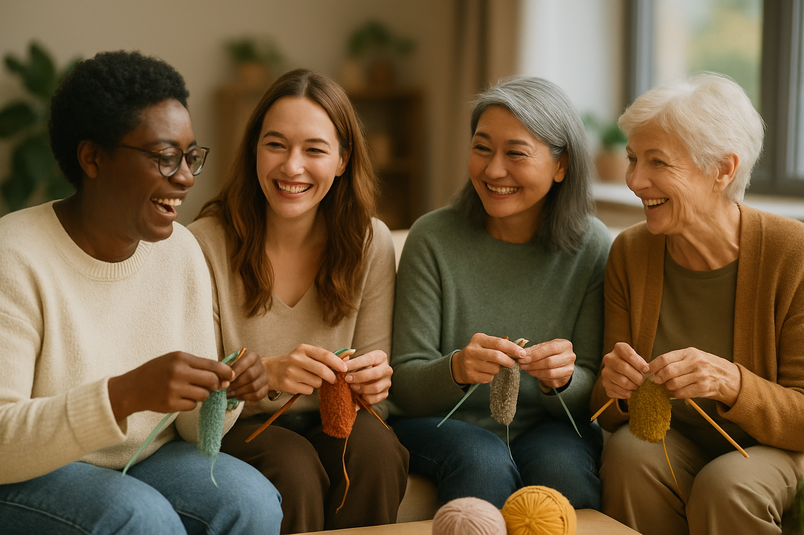
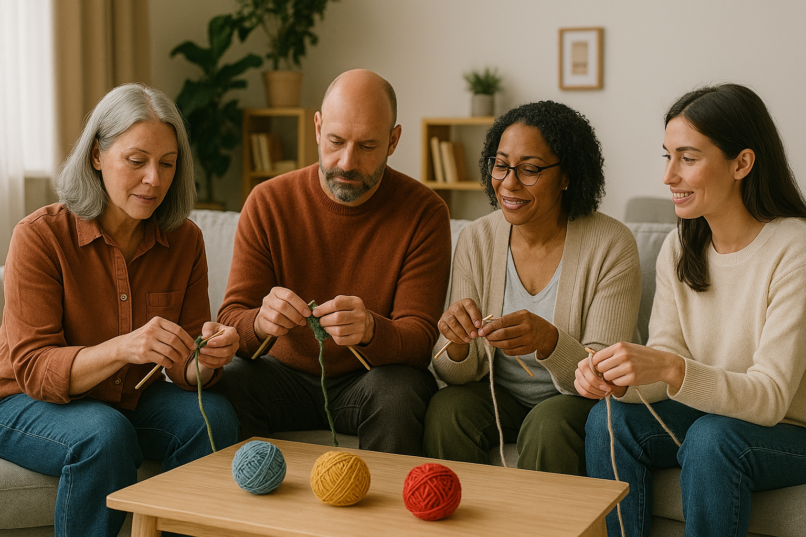

About Us
Our knitting club is a welcoming community of makers who enjoy creating, learning, and connecting through the art of fiber crafts. Whether you’re an experienced knitter or just picking up needles for the first time, you’ll find encouragement, inspiration, and plenty of shared laughter at our gatherings. We meet regularly to work on projects, explore new techniques, and support each other’s creative journeys. Everyone is invited to join us—come stitch, sip tea, and make something beautiful alongside friends.
Our Meetings
Our knitting club meets every Thursday evening from 6:00–8:00 PM in the bright, cozy community room at the Willow Creek Arts Center, located just off Maple Street. Each gathering is relaxed and welcoming—members bring their current projects, enjoy warm tea, and often share new techniques or creative ideas. Whether it’s a quiet night of stitching or a lively demonstration of a new pattern, our weekly meetings offer a warm space to unwind, learn, and connect with fellow crafters.



Knitting For a Cause
Our group loves taking on creative needlework challenges that support meaningful causes throughout the year. From crafting warm hats and scarves for local shelters to knitting soft blankets for hospital outreach programs, we work together to create handmade comfort for those in need. Each challenge encourages members to stretch their skills, collaborate on patterns, and contribute to a shared mission of kindness. Giving back through our craft has become one of the most rewarding parts of our club, reminding us that even small stitches can make a big impact.